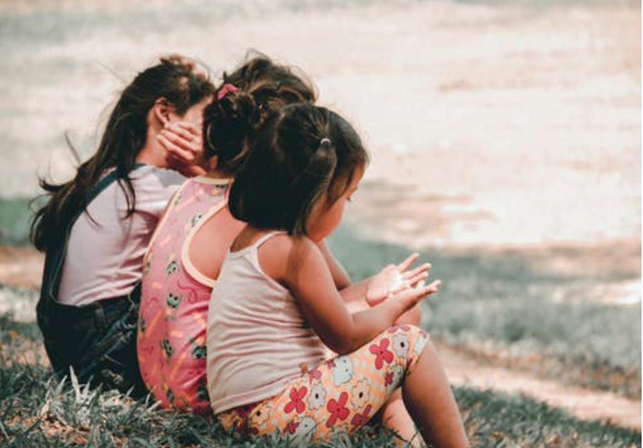
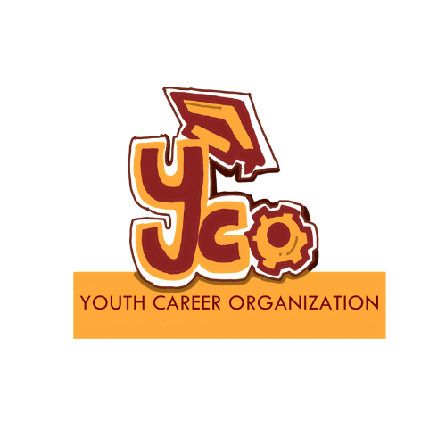
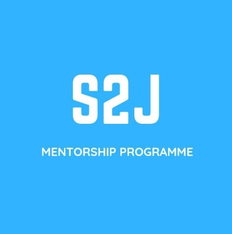

<!DOCTYPE html>
<html lang="en">
<head>
    <meta charset="UTF-8">
    <meta http-equiv="X-UA-Compatible" content="IE=edge">
    <meta name="viewport" content="width=device-width, initial-scale=1.0">
    <meta name="keywords" content="Myanmar Revolution, Myanmar Education, Military Coup">
    <link type="text/css" href="style.css" rel="stylesheet" />
    <link rel="stylesheet" href="https://cdnjs.cloudflare.com/ajax/libs/font-awesome/5.15.3/css/all.min.css" integrity="sha512-iBBXm8fW90+nuLcSKlbmrPcLa0OT92xO1BIsZ+ywDWZCvqsWgccV3gFoRBv0z+8dLJgyAHIhR35VZc2oM/gI1w==" crossorigin="anonymous" referrerpolicy="no-referrer" />
    <title>EduRader</title>
        
</head>

<style>

@import url(https://fonts.gstatic.com);
@import url(https://fonts.googleapis.com/css2?family=Lobster&display=swap);
@import url(https://fonts.googleapis.com/css2?family=Pattaya&display=swap);
@import url(https://fonts.googleapis.com/css2?family=Rubik:wght@400;500&display=swap);
@import url(https://fonts.googleapis.com/css2?family=Roboto+Slab:wght@200;300;400;600;800&display=swap);

*{
    scroll-behavior: smooth;
}


body {
    width: fit-content;
    block-size: fit-content;
    background-color: rgb(75, 187, 202);
    text-decoration: none;
    scroll-behavior: smooth;
    font-family: 'Roboto Slab', serif;
    margin: auto ;
    box-sizing: border-box;
}
.two .three{
    width: 100px;
}

header{
    background-color: rgb(216, 61, 82);
    height: 11vh;
    width: 100%;
    z-index: auto;
    display: inline-block;
    margin-bottom: 0px;

}
.Done {
    text-align: left;
    display: inline-block;
    margin-left: 5em;
    font-weight: 800;
    word-spacing: 2px;
    margin-top: 5px;
}

.ONE {
    display: inline-block;
    color: rgb(46, 36, 36);
    padding: 10px 25px 10px 25px;
    font-size: 16px;
    border: none;
    cursor: pointer;
    text-decoration: none;
    margin-right: 2em;
    border-radius: 5px;
    margin-bottom: -5px;

}
.fst{
    margin-left: 35em;
}
.dropdown {
    display: inline-block;
}

.dropdown-content {
    display: none;
    padding: 2px 2px 2px 0px;
    margin-top: 5px;
    border-radius: 5px;
    position: absolute;
    background-color: #000000ad;
}
.drop{
    margin-right: 0px;
}

.Two {
    background-color: rgba(0, 0, 0, 0);
    color: rgba(255, 255, 255, 0.849);
    display: block;
    text-decoration: none;
    padding: 10px 10px 10px 10px;
}
.Two:hover {
    color: #000000;
    background-color: rgb(216, 61, 82);
}

.dropdown:hover .dropdown-content {
    display: block;
}
.dropdown:hover .drop {
    background-color: #07010198;
    color: white;
}
.ONE:hover {
    color: white;
    background-color: #07010198;
}
.container {
    height: 800px;
    background: black;
    overflow: hidden;
    background: url("main-profile.jpg");width: 100%;
    background-size: cover;
    backdrop-filter: black (5px);
}

.fs-one {
    background-color: rgba(0, 0, 0, 0.795);margin: 14em auto auto auto;  max-width: 40rem;
    color: white; border-style: solid;
    border-image: linear-gradient(
    to bottom, 
    red, 
    rgba(0, 0, 0, 0)
    ) 1 100%;
    z-index: -2;
}

.one-part{
    text-align: center;
    display: block;
    width: auto;
    padding: 0px 52px 0px 52px;

}

.two:hover img {
    box-shadow: 0px 10px 16px 16px #312f2f0e;
    transition: 1.5s;
}.three:hover img {
    box-shadow: 0px 10px 16px 16px #312f2f1a;
    transition: 1.5s;}.two{
    height: 50vh;
    display: flex;
    justify-content: left;
    align-items: center;
    background-color: rgb(142, 190, 230);}.two-img{
    margin-left: 20px;
    width: 300px;
    height: 250px;
    border-radius: 20px;
    box-shadow:0px 4px 8px rgba(58, 57, 57, 0.651);}.two-part{
    width: 600px;
    margin-left: 40px;
}
.two{
    height: 40vh;
    display: flex;
    justify-content: left;
    align-items: center;
    background-color: rgb(142, 190, 230);
}
.three{
    height: 40vh;
    display: flex;
    justify-content: left;
    align-items: center;
    background-color: rgba(243, 235, 125, 0.89);}
.three-img{
    margin-left: 20px;
    width: 300px;
    height: 250px;
    border-radius: 20px;
    box-shadow:0px 4px 8px 0px rgba(58, 57, 57, 0.74);
}
.three-part{
    width: 600px;
    margin-left: 40px;
}
.fa-lg{
    text-align: center;
    color: rgba(173, 11, 11, 0.795);}

#myBtn {
    display: none; 
    position: fixed;
    bottom: 20px; 
    right: 30px;
    z-index: 99;
    border: none;
    outline: none;
    background-color: rgb(211, 0, 0);
    color: rgba(255, 255, 255, 0.993);
    cursor: pointer;
    padding: 0px;
    border-radius: 50px;
    box-shadow: 0px 3px 5px 5px rgba(0, 0, 0, 0.349);
    font-size: 18px;
    }

    #myBtn:hover{
    background-color:  rgb(75, 187, 202);
    }
    .fa-chevron-circle-up:hover {
    color: rgb(255, 0, 0);
    }
    footer{
    min-height: 50px;
    background: url(footer.jpg) no-repeat;
    background-size: cover;
    margin-top: 30px;
    padding: 20px;
    }

    .copy-footer{
    text-align: left;
    color: rgb(219, 197, 124);
    }


@media only screen and (max-width: 1200px){
    .fst{
        margin-left: 15em;
    }
}

@media only screen and (max-width: 600px){
    body {
        zoom: 0.35;
    }
    .ONE {
        font-size: large;
    }
    .fst{
        margin-left: 30em;
    }
    .three{
    background-color: rgba(233, 109, 167, 0.89);
    }
}
@media only screen and (max-width: 425px){
    body {
        zoom: 0.34;
    }
    .ONE {
        font-size: large;
    }
    .fst{
     margin-left: 22em;
}
.fs-one {
    background-color: rgba(0, 0, 0, 0.795);margin:10em auto auto auto;  max-width: 50rem;
    color: white; border-style: solid;
    border-image: linear-gradient(
    to bottom, 
    red, 
    rgba(0, 0, 0, 0)
    ) 1 100%;
    z-index: -2;
}
.two, .three{
    height: 80vh;
}
.three{
    background-color: rgb(221, 221, 137);
}
.two-img, .three-img{
    width: 400px;
    height: 400px;
}
.two-part, .three-part{
    font-size: 1.3em;

}
.fa-lg{
    width: 10px;
    size: 10em;
    margin-right: 20px;
    color: rgba(173, 11, 11, 0.795);
    padding-bottom: 10px;
}
}
<\style>  
    
<body>
    <header>
        <nav>
            <a class="Done" style="color: whitesmoke; margin-left: 20px; text-decoration: none; font-size: x-large;">EduRader.</a>
            <a class="ONE fst" href="#Home"><b>Home</b></a>
            <a class="ONE" href="#one-part"><b>Edu Sites</b></a>

            <div class="dropdown">
                <a class="drop ONE" href="#"><b>Sites By Name</b></a>
                <div class="dropdown-content">
                    <a class="Two" href="#Uone">Free Online Educational Institution Myanmar</a>
                    <a class="Two" href="#Utwo" >Teaching Children At Home Myanmar</a>
                    <a class="Two" href="#Uthree">Youth Career Organization</a>
                    <a class="Two" href="#Ufour" >Run Free Education</a>
                    <a class="Two" href="#Ufive" >Virtual Federal University</a>
                    <a class="Two" href="#Usix" >Spring University Myanmar-SUM</a>
                    <a class="Two" href="#Useven">S2J Mentorship Programme</a>
                </div>
            </div>
        </nav>
        <p style="font-family: 'Roboto Slab', serif; font-size: 10px; color: rgb(0, 0, 0); padding: 3px; background-color: rgb(142, 190, 230); text-align: center;">
            <strong>Note:</strong> ယခု အကောင်အထည်ဖော်ဆောင်ရွက်လျက်ရှိသောသင်ခန်းစာ၊ဘာသာရပ်များကို စစ်အာဏာရှင်တော်လှန်ရေးတွင်ပါဝင်နေကြသောကြောင့်သာမက အကြောင်းအမျိုးမျိုးကြောင့် မတက်ရောက်နိုင်ကြသည့် 
            ကျောင်းသား/ကျောင်းသူများနှင့် စိတ်ပါဝင်စားကြသူများသည်လည်း ၎င်းတို့အားလပ်ချိန်တွင် ဆက်လက်လေ့လာနိုင်ရန်အတွက်ကိုပါ စီစဉ်ဆောင်ရွက်ပေးကြဖို့ အဖွဲ့အစည်းများ၏
            တာဝန်ရှိသူများသို့ အကြံပြုလိုပါသည်။ 
        </p>
    </header>
    <br>
    <div class="container">
        <div id="Home">
            <fieldset class="fs-one">
                <legend>
                </legend>
                    <h6>Unicode</h6>
                    <p style="color: white; text-align: justify;">ယခုလိုအချိန်ကာလအတွင်း အခြေအနေအရပ်ရပ်တို့ကြောင့် စစ်အုပ်စုမှ ဖွင့်လှစ်သော စာသင်ခန်းများအတွင်းသို့ သွားရောက်ပညာမသင်ယူလိုသော ကျောင်းသား/ကျောင်းသူများအနေဖြင့် ပြင်ပလူမှုအကျိုးပြု အွန်လိုင်းအခြေပြုသင်ကြားရေးအဖွဲ့အစည်းများတွင် သင်ယူလေ့လာနိုင်ရန် အဆိုပါအဖွဲ့အစည်းများအား စုစည်းဖော်ပြပေးထားသည့် Site ဖြစ်ပါသည်။</p>
                    <details>
                        <summary style="text-align: center;"><strong>Click Here for Zawgyi Version</strong></summary>
                    <p style="color: white; text-align: justify;">ယခုလိုအခြိနျကာလအတှငျး အခွအေနအေရပျရပျတို့ကွောငျ့ စစျအုပျစုမှ ဖှငျ့လှစျသော စာသငျခနျးမြား/အတှငျးသို့ သှားရောကျပညာမသငျယူလိုသော ကြောငျးသား/ကြောငျးသူမြားအနဖွေငျ့ ပွငျပလူမှုအကြိုးပွု အှနျလိုငျးအခွပွေုသငျကွားရေးအဖှဲ့အစညျးမြားတှငျ သငျယူလေ့လာနိုငျရနျ အဆိုပါအဖှဲ့အစညျးမြားအား စုစညျးဖောျပွပေးထားသညျ့ Site ဖွစျပါသညျ။</p>
                    </details>
            </fieldset>
        </div>
    </div>


    <section class="one" style="margin-bottom: 10px; padding: 10px;">
        <div class="one-part" id="one-part">
            <h1>Edu Sites</h1>
            <p>နယ်ပယ်မျိုးစုံမှ ဘာသာရပ်အမျိုးအစားအစုံအလင်ကို သင်ကြားပို့ချပေးရန် စီစဉ်နေသည့် Online-Based Sites များကို ထည့်သွင်းဖော်ပြထားပါသည်။ Page သို့ တိုက်ရိုက်ဝင်ရောက်ကြည့်ရှုလိုပါက အောက်ပါသက်ဆိုင်ရာပုံကိုနှိပ်၍ ကြည့်ရှုနိုင်ပါသည်။</p>
            <details>
                <summary><strong>Click Here for Zawgyi Version</strong></summary>
                <p>နယျပယျမြိုးစုံမှ ဘာသာရပျအမြိုးအစားအစုံအလငျကို သငျကွားပို့ခပြေးရနျ စီစဉျနသေညျ့ Online-Based Sites မြားကို ထညျ့သှငျးဖောျပွထားပါသညျ။ Page သို့ တိုကျရိုကျဝငျရောကျကွညျ့ရှုလိုပါက အောကျပါသကျဆိုငျရာပုံကိုနှိပျ၍ ကွညျ့ရှုနိုငျပါသညျ။</p>
            </details>
        </div>
    </section>

    <div>
    <div style="font-family: 'Rubik', sans-serif; font-weight: 500;">
        <section class="two" style="margin:2px 0px 5px 0px;" id="Uone" id="Edu">
            <a href="https://www.facebook.com/foeim" target="_blink"></img></a>
            <div class="two-part">
                <i class="fas fa-university fa-lg"></i><span> Free Online Educational Institution Myanmar</span><br><br>
                <i class="fas fa-dollar-sign fa-lg"></i><span>&nbsp;&nbsp; 100% Free</span><br><br>
                <i class="fas fa-users fa-lg"></i><span>&nbsp; Basic Education (Grade 1 - 11)</span><br><br>
                <i class="fas fa-book fa-lg"></i><span>&nbsp; All Subjects (incl. Webinars & Seminars)</span><br><br>
                <i class="fas fa-tasks fa-lg"></i><span>&nbsp; Open Enrolment (Click on the Image for more details)</span><br><br>
            </div>
         </section>

        <section class="three" style="margin:2px 0px 5px 0px;" id="Utwo">
            <a href="https://www.facebook.com/Teaching-Children-At-Home-Myanmar-101255708792154/?__tn__=-UC*F" target="_blink"></img></a>
            <div class="three-part">
                <i class="fas fa-university fa-lg"></i><span> Teaching Children At Home Myanmar</span><br><br>
                <i class="fas fa-dollar-sign fa-lg"></i><span>&nbsp;&nbsp; 100% Free</span><br><br>
                <i class="fas fa-users fa-lg"></i><span>&nbsp; Basic Education (KG - Grade 2)</span><br><br>
                <i class="fas fa-book fa-lg"></i><span>&nbsp; ဗမာစာ | English | Maths | Science</span><br><br>
                <i class="fas fa-tasks fa-lg"></i><span>&nbsp; Open Enrolment (Click on the Image for more details)</span><br><br>
            </div>
        </section>

        <section class="two" style="margin:2px 0px 5px 0px;" id="Utwo">
            <a href="https://www.facebook.com/youthcareerorg" target="_blink"></img></a>
            <div class="two-part">
                <i class="fas fa-university fa-lg"></i><span> Youth Career Organization</span><br><br>
                <i class="fas fa-dollar-sign fa-lg"></i><span>&nbsp;&nbsp; 3,000MMK per month</span><br><br>
                <i class="fas fa-users fa-lg"></i><span>&nbsp;&nbsp;  Career Development-Focused Majors (This Applies to everyone)</span><br><br>
                <i class="fas fa-book fa-lg"></i><span>&nbsp; Foreign Languages | Digital Marketing</span><br><br>
                <i class="fas fa-tasks fa-lg"></i><span>&nbsp; Open Enrolment (Click on the Image for more details)</span><br><br>
            </div>
        </section>

        <section class="three" style="margin:2px 0px 5px 0px;" id="Ufour">
            <a href="https://www.facebook.com/RunFreeEdu2020/" target="_blink"></img></a>
            <div class="three-part">
                <i class="fas fa-university fa-lg"></i><span> Run Free Education</span><br><br>
                <i class="fas fa-dollar-sign fa-lg"></i><span>&nbsp; 100% Free</span><br><br>
                <i class="fas fa-users fa-lg"></i><span>&nbsp;&nbsp; Various-Vocational & Academic Education (This applies to everyone)</span><br><br>
                <i class="fas fa-book fa-lg"></i><span> Basic Educaton | Foreign languages | Business Majors | Arts</span><br><br>
                <i class="fas fa-tasks fa-lg"></i><span>&nbsp; Open Enrolment (Click on the Image for more details)</span><br><br>
            </div>
        </section>
        
        <section class="two" style="margin:2px 0px 5px 0px;" id="Ufive">
            <a href="https://www.facebook.com/VirtualFederalUni" target="_blink"></img></a>
            <div class="two-part">
                <i class="fas fa-university fa-lg"></i><span> Virtual Federal University</span><br><br>
                <i class="fas fa-dollar-sign fa-lg"></i><span>&nbsp; 100% Free</span><br><br>
                <i class="fas fa-users fa-lg"></i><span>&nbsp; Research-Based Education (This applies to everyone)</span><br><br>
                <i class="fas fa-book fa-lg"></i><span> History | Political Science | Federalism | Ethnic Languages</span><br><br>
                <i class="fas fa-tasks fa-lg"></i><span>&nbsp; Open Sources (History & Political Science Online Courses are Available)</span><br><br>
            </div>
        </section>

        <section class="three" style="margin:2px 0px 5px 0px;" id="Usix">
            <a href="https://www.facebook.com/springuniversitymm" target="_blink"></img></a>
            <div class="three-part">
                <i class="fas fa-university fa-lg"></i><span> Spring University Myanmar-SUM</span><br><br>
                <i class="fas fa-dollar-sign fa-lg"></i><span>&nbsp; No Data (The costs depend on the Subject you enrol in)</span><br><br>
                <i class="fas fa-users fa-lg"></i><span>&nbsp; Various (This applies to everyone)</span><br><br>
                <i class="fas fa-book fa-lg"></i><span> Center for College Preparation | Federalism & Peace Studies | Science, Technology, Engineering, Mathematics |Law | Arts & Social Science | Languages </span><br><br>
                <i class="fas fa-tasks fa-lg"></i><span>&nbsp; Open Enrolment (IELTS Fees Scholarship)</span><br><br>
            </div>
        </section>

        <section class="two" style="margin:2px 0px 5px 0px;" id="Useven">
            <a href="https://www.facebook.com/S2JMentorshipMM" target="_blink"></img></a>
            <div class="two-part">
                <i class="fas fa-university fa-lg"></i><span> S2J Mentorship Programme</span><br><br>
                <i class="fas fa-dollar-sign fa-lg"></i><span> 100% Free</span><br><br>
                <i class="fas fa-users fa-lg"></i><span>&nbsp;&nbsp; Law (3rd Year - Final Year)</span><br><br>
                <i class="fas fa-book fa-lg"></i><span>&nbsp; International Law Specialised | Domastic Law Specialised | Commercial Law Specialised</span><br><br>
                <i class="fas fa-tasks fa-lg"></i><span>&nbsp; Open Enrolment (Click on the Image for more details)</span><br><br>
            </div>
        </section>
    </div>
    </div>

    <button onclick="topFunction()" id="myBtn" title="Go to top"><i class="fas fa-chevron-circle-up fa-3x"></i></button>
    <script>
        mybutton = document.getElementById("myBtn");
        window.onscroll = function() {scrollFunction()};

    function scrollFunction() {
        if (document.body.scrollTop > 20 || document.documentElement.scrollTop > 20) {
            mybutton.style.display = "block";
    }     
        else {
            mybutton.style.display = "none";
        }
    }

        function topFunction() {
            document.body.scrollTop = 0; // For Safari
            document.documentElement.scrollTop = 0; // For Chrome, Firefox, IE and Opera
        }
    </script>

    <footer>
        <div class="log-wrap">
            <a class="ft" href="#Home" style="font-family: 'Roboto Slab', serif; font-weight: 800;
            color: rgb(68, 233, 255); word-spacing: 5px;text-decoration: none;">EduRader</a>
           <p class="copy-footer">&copy; 2021 EduRader. Design & Data by Rainn</p>
   </footer>

</body>
</html>
